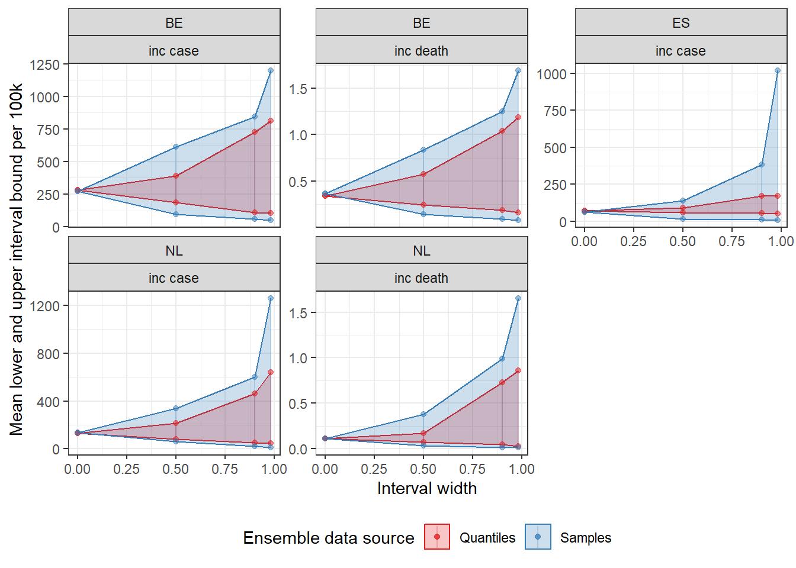

An applied example of information loss due to categorising uncertainty in epidemic modelling
Background
Methods
Results
A total of six modelling teams submitted projections to the European COVID-19 Scenario Hub in Round 2 (# to # 2022). Teams selected which targets to model from a large set of possible projection targets (32 countries, 2 outcomes), with only two teams submitting projections for nearly all targets. Teams were asked to model four scenarios for each target.
Here we only consider targets with results from three or more models for all four scenarios. This included weekly incident cases in Spain, the Netherlands, and Belgium; and weekly incident deaths in the Netherlands and Belgium. For each of these five targets, three teams contributed separate projections for each of the four scenarios. Two teams contributed 100 samples each, and one team contributed 96 samples. Therefore in total we consider 5920 samples (1480 samples for each of four scenarios), where each sample comprises a weekly time-series projection over up to one year.
Result 1
First we explore epidemic characteristics using sample trajectories. We summarised information about cumulative outbreak size over the projection period. For each target, we compared the cumulative number of projected outcomes to a threshold of the cumulative total over the one year before projections started (to July 2022). Across all 5,920 trajectories for all targets, 10% saw a cumulative total exceeding the relevant threshold. This varied widely, for example in Belgium where 25% and 2.5% of all trajectories would see a cumulative total exceeding the previous year’s total number of cases and deaths respectively.
Sample trajectories also allowed us to explore projected peaks in incidence. We looked at peaks both over the entire projection period, and over only the autumn-winter period (October through March). In summarising peak characteristics, we considered both the timing and maximum weekly incidence of each peak, and the total number of peaks, representing distinct epidemic waves and the timing of their turning points.
These epidemic characteristics could not be meaningfully estimated from the same results summarised into quantiles, as this sequence of summaries has no theoretical continuity through the time-series.
Result 2

Figure 1. Comparison of trajectories, an ensemble of trajectories, an ensemble of quantiles, and a weighted ensemble of trajectories weighted by performance against 28 weeks’ observed data
Next we took a set of 23 quantiles from the distribution of samples provided by each model for each target. We created an ensemble using a median average at each quantile interval. We compared this ensemble (figure 1B), to taking the same set of quantiles directly from the entire set of samples provided by all models (figure 1C).

Figure 2. Mean central prediction intervals across time and scenarios. Mean lower and upper interval bounds: 52 week mean of quantiles in the sample and quantile ensembles
We created two ensemble projections derived from the same set of samples, with an identical set of quantile intervals representing a probabilistic projection at each time point. To compare between the two ensembles, we took the average of values at each quantile across all time points and scenarios (figure 2).
This showed both ensembles produced similar values around the centre of the distribution, with no noticeable difference between the median values of each projection. However, the two ensembles increasingly diverged in projecting the outer upper limit of the probabilistic distribution. At the upper 98% probability interval, ensemble projections for cases in Spain averaged nearly six times higher incidence when drawn from 100 samples compared to when drawn from quantiles (respectively averaging 1016 and 173 weekly new cases per 100,000 population). Across all five targets, the pattern held that an ensemble based on samples produced sharply increasing uncertainty between the 90% to 98% intervals. Meanwhile in an ensemble based on quantiles projected values were closer across upper bound probabilistic intervals.
Result 3

Figure 3. Weight of individual samples in an ensemble across all available samples for each of five projection targets. Samples were weighted by the inverse of mean absolute error against 28 weeks’ observed data, meaning higher weight reflects better forecasting performance.
We then considered the forecasting performance of individual samples against 28 weeks’ observed data (figure 3). The performance of each sample varied substantially between both models and targets. When weighted by inverse MAE, no sample received more than 0.33% weight (among n=1184 samples for each target). Weighting was heavily skewed across samples for some targets, including cases in Spain and Belgium with outlying clusters of highly weighted predictive samples from one model. Weights were more uniform across samples’ forecast performance for deaths in the Netherlands and Belgium.
Creating an ensemble using the weighted performance of samples helped reduce the uncertainty of the future projection (figure 1D).
In the Netherlands in the final week of projections for deaths, the most extreme single trajectory projected an incident 2.8 per 100,000 in the final week of projections. However when we weighted all trajectories by performance and took quantiles from this distribution, the upper limit of 99% probability suggested an incidence over 8 times lower, at 0.33 per 100,000.
Discussion
Summary of results
Strengths of using samples:
- Samples show trajectory shapes, peaks, and cumulative burdens
- Weighting only possible from samples - samples can continue to be used, quantiles are one-off results
Limitations
- Simple ensemble still doesn’t solve the problem of combining multiple shapes in one epidemic curve
We collected three models for five targets in Spain, the Netherlands, and Belgium. Data reporting quality varied substantially between these targets. However, assuming all models had access to the same data sources, our conclusions with respect to the process of reducing samples to quantiles remain valid.
Scenarios offer a way to explore epistemic uncertainty by explicitly varying assumptions about system characteristics. However, the reduction of model outputs to quantile probabilities limits this possibility.
- Conclusions and recommendations
- Depends what the focus + longevity of the project is:
- Little difference (i.e. little information is lost) if the focus is one-off, or only on the central estimates
- Samples better if focus is long-term use of one set of results, on peaks and cumulative sizes, or on outer bounds of uncertainty
- Further work
- Number of samples to collect from each model
- Ensemble by shape of epidemic curve
Weighting by performance meant we narrowed our set of trajectories to increasingly plausible projections of the future. Conditioning on observed data meant we excluded epidemic shapes based on autocorrelations to unrealised events